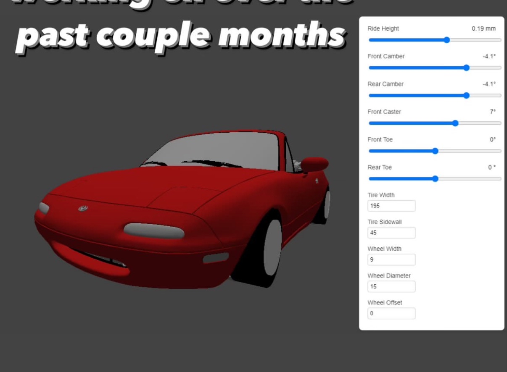
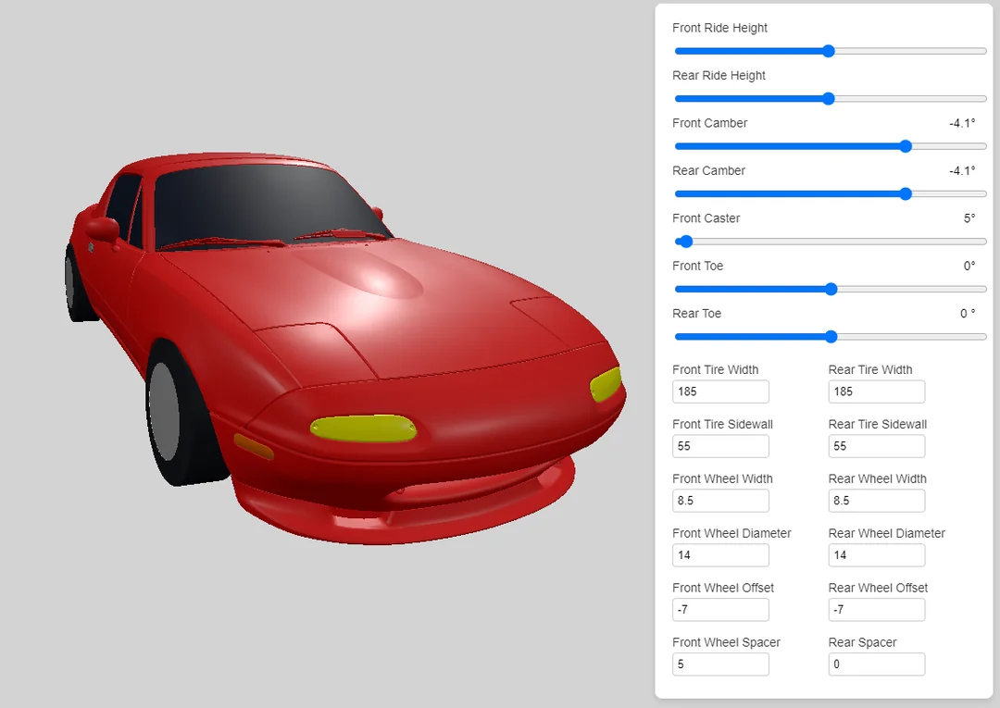
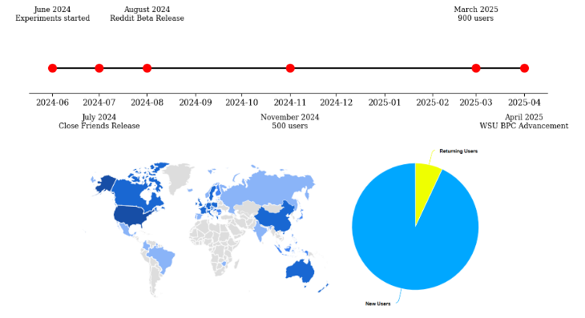
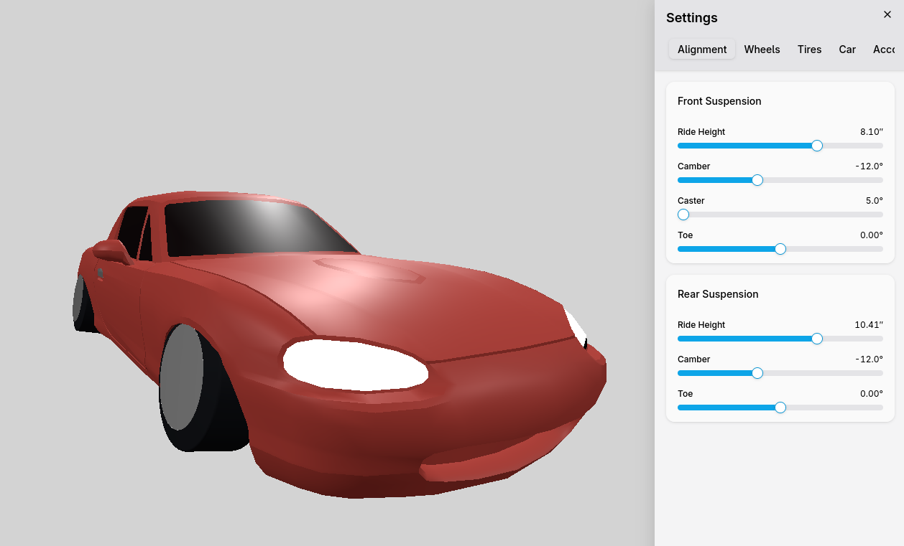
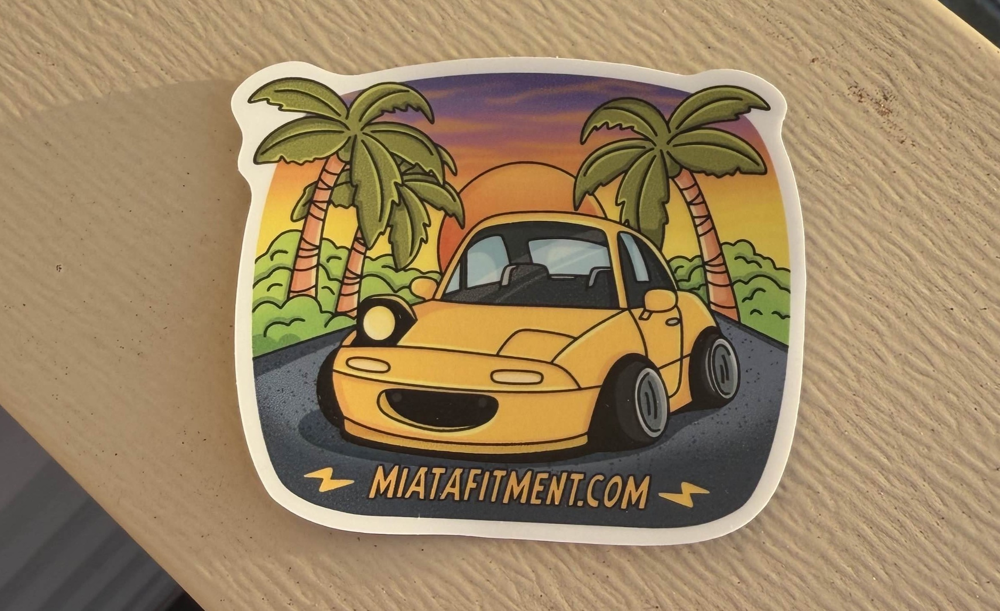

The summer of 2024 was the first summer I spent out in Pullman, if anyone happens to read this and doesn't know Pullman, Pullman is a college town, so when the spring semester ends, the city empties out. Outside of my internship at SEL, I didn't really have anything to do, so I'd spent a lot of time that summer doom scrolling forums relating to Mazda Miatas.
I saw a question being asked over and over again in many different ways, all relating to how different wheel specs fit on a Miata. I knew this was a big topic because I've also spent dozens of hours researching this for my personal Miata. At the time I was playing around with ThreeJS, which is a general purpose, lightweight, easy to use 3D JavaScript library.
Of course, being the car guy that I am, I was modeling cars in 3D when I realized that you can actually model cars to scale, and once you figured out the scale, you could model any wheel, tire, or suspension setup for any car.
If this was a problem that I could solve, I could really make an impact on a community that I care so much about.
So I grabbed a 3D Miata scan off the internet, loaded it up in Blender, and got to work. It was my first time ever using Blender, so I had to teach myself the basics. Once I got comfortable, I textured the model and scaled it using the stock 14” wheel as reference.
My Blender skills were (and still are) questionable, but the first draft looked something like this:
The model definitely needed some cleanup. The UI looked fine on desktop, but the sidebar took up the entire screen on mobile, which made it basically unusable. It was also missing features like wheel spacer support and other Miata generations (NB, NC, ND).
But even in that state, it solved a real problem. And I was genuinely surprised by how supportive the community was.
Over the rest of 2024 and some of 2025 I made some improvements, but I was mostly busy with other things, like my internship, school, and climbing.
During that time I noticed the traction the website received, after talking to some people I realized I might have something on my hands, so I entered it in the 2025 WSU Business Plan Competition.
During the time leading up to competition, I put a lot of work into prettying up the site, adding features, and most importantly, getting user feedback.
At the time of entering Miata Fitment in the competition it was used by about 900 people. Those 900 people came from 47 different countries, and 13% of people came to the site more than once.
I remember a particular Redditor mentioned "If you make this a complete website with all models and other stuff, the community is going to love you"
I ended up placing 5th, which won me $2,000 to invest into the site... which I promptly spent backpacking Europe that same summer.
But more importantly, it made me realize I might actually have something here. So I doubled down, took the community’s feedback seriously, cleaned up a lot of tech debt, redesigned the UI (again), added more generations, and built features like suspension simulation.
Today, miatafitment.com has been used by around 3,000 people and generates some money through merch sales.
Over the past few months, I’ve been paying closer attention to monetization. Roughly 10% of users click through to look at wheels. Right now that routes to someone else’s site but if that were an affiliate link (or my own inventory), there’s clearly potential there.
I’m still figuring that piece out. But for now, I’m just proud I was able to solve a real problem for the community.
I plan to enter the 2026 competition and focus more seriously on monetization. The goal is to turn this into a legitimate side business with the goal of maybe being able to justify spending even more money on car parts :)
I didn’t want to go too deep into the tech in this write-up, but for anyone curious:
- ThreeJS handles the 3D rendering.
- Blender is used for modeling.
- React powers the frontend.
- shadcn is my component library.
- zustand manages state.
- Supabase handles authentication and backend data.
Links below are various different presentations and write ups I've done on the website over the years. Thanks for reading!
miatafitment.com 2025 BPC final round presentation